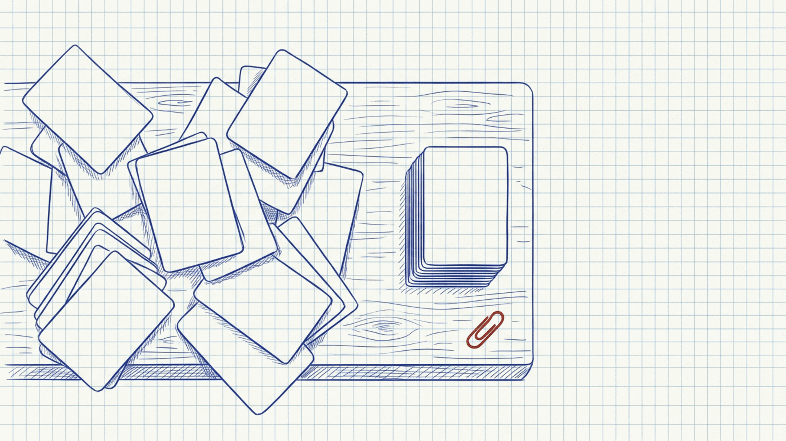
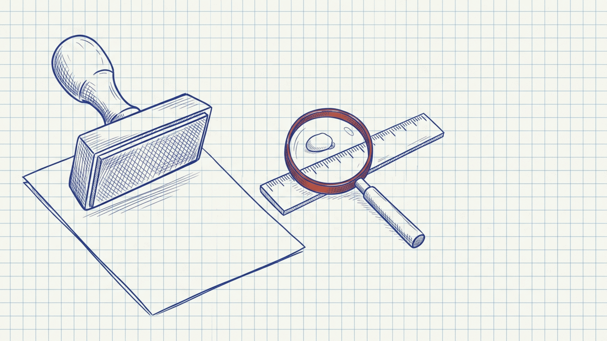
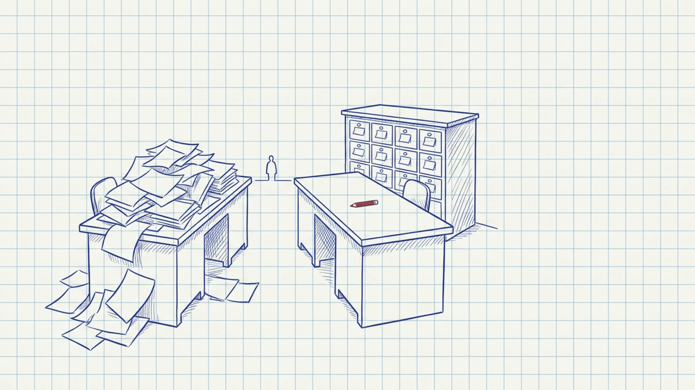
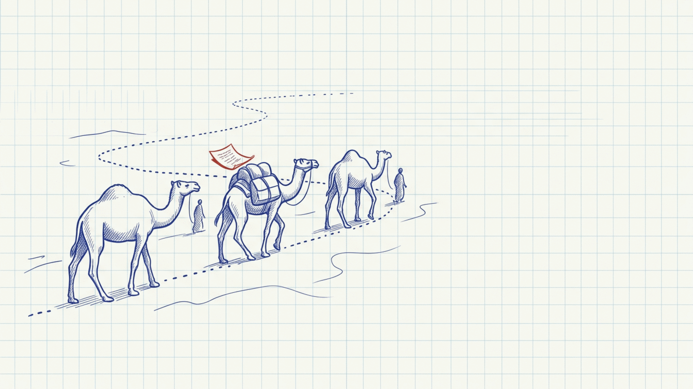

tas-w01-hook-cards الأسبوع ١كروت مبعثرة مقابل حزمة مرتبة — التفصيل الأحمر: مشبك ورقي.

tas-w01-hook-bricks الأسبوع ١ · احتياطيكومة طوب مقابل بيت من نفس الطوب — لم يُربط بصفحة.

tas-w02-hook-stamp الأسبوع ٢ختم مطاطي مقابل مسطرة وعدسة — الوسم مقابل الوصف.

tas-w03-hook-rooms الأسبوع ٣غرفتان بجدار — والضوء الأحمر تحت الباب (حُوِّل من كهرماني إلى أحمر الطوبي).

tas-w04-hook-chairs الأسبوع ٤كرسيان متباعدان وكوبا شاي، ثم متقابلان والشاي نصف مشروب.

tas-w05-hook-desks الأسبوع ٥ · بديل ثانٍمكتب تحت ورق منهار مقابل مكتب فاضٍ وخزانة أدراج — البديل الأول رُفض لوجود جسم ظليل واقف.

tas-w06-hook-pharmacy الأسبوع ٦أدراج بيضاء بلا عناوين — أبواب العلوم.

tas-w07-hook-napkin الأسبوع ٧صينية شاي ورسم أعمدة على منديل — الأرقام على ظهر منديل.

tas-w08-hook-caravan الأسبوع ٨ورقة مخطوط مع قافلة على خط خريطة — سفر المعرفة.
لم تُولَّد بعد — حد المولّد في الرد الواحد
tas-w09-hook-lens · tas-w10-hook-roots · tas-w11-hook-toolbox · tas-w12-hook-builder ٩–١٢لم تُولَّد بعد
tas-w13-hook-desk · tas-w14-hook-cave · tas-w15-hook-steps · tas-w16-hook-road ١٣–١٦